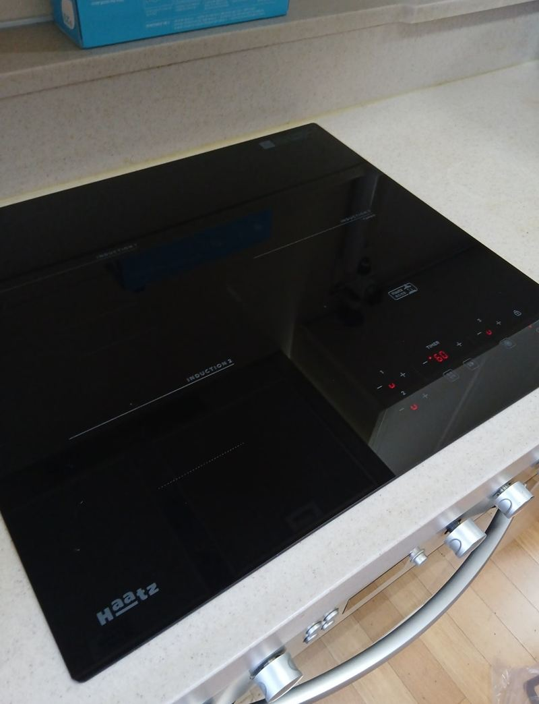
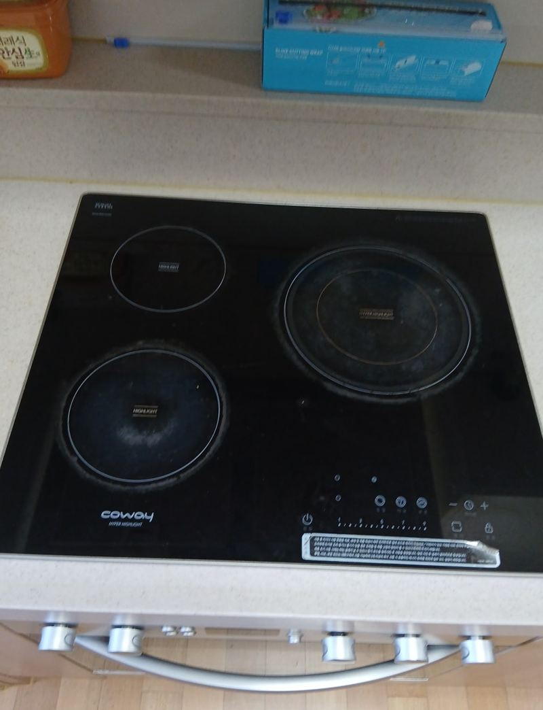
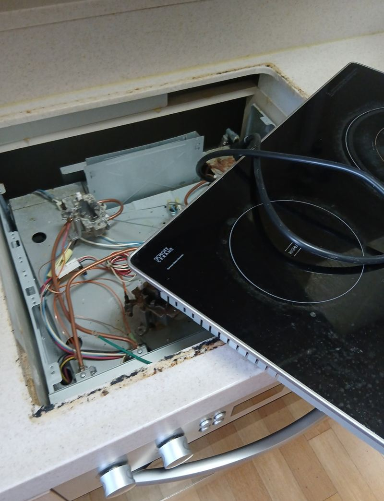
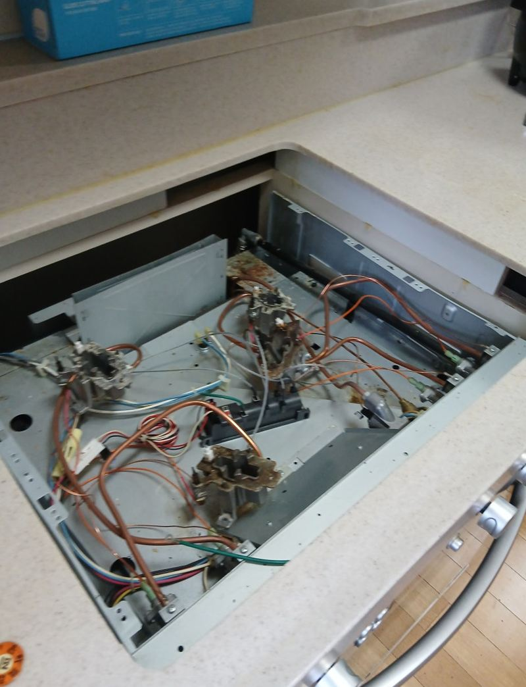
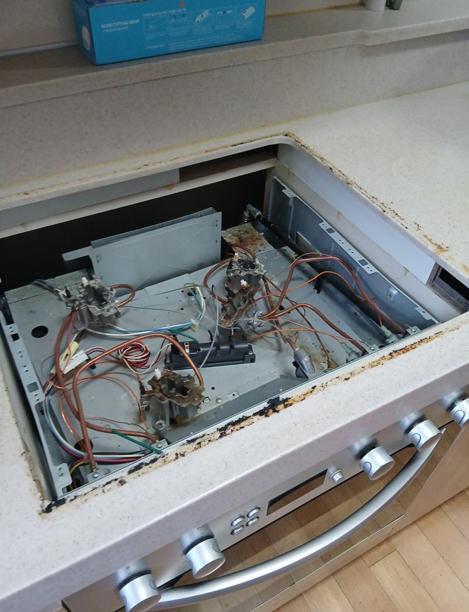
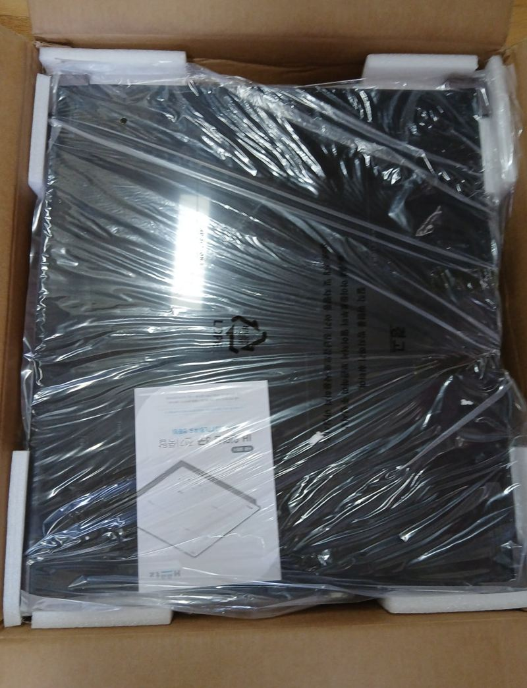

부천 하이라이트·인덕션 수리 vs 교체 기준
← 밀어서 전후 비교 →
"연세가 있으셔서 냄비를 올려놓고 자꾸 깜빡하세요. 그릇이 타 버린 적이 여러 번이라 안전하게 인덕션으로 바꾸고 싶어요." 부천 역곡동 아파트에 사시는 어르신 댁이었어요. 렌탈로 쓰던 하이라이트는 고장이 아니라, 쓰는 분에게 안전 기능이 부족한 게 문제였어요. 하이라이트를 떼고 눌어붙은 기름때를 닦은 뒤, 상판 구멍에 맞는지 다시 재서 자동으로 꺼지는 인덕션을 달고 모든 화구를 시험했어요.
| 현장 | 부천 원미구 역곡동 아파트 주방 |
|---|---|
| 이유 | 냄비를 올려 두고 잊는 일이 잦아 화재 걱정 |
| 한 일 | 규격·상판 구멍 확인 → 전원 차단 후 하이라이트 철거 → 상판 기름때 청소 → 새 인덕션 치수 재확인 → 안착·전원 연결 → 화구·안전 기능 확인 → 폐제품 수거 |
| 바꾼 점 | 하이라이트에서 자동 꺼짐 기능이 있는 인덕션으로 |
고칠까, 바꿀까
하이라이트가 고장 났다면 부품 수리로 되는지 먼저 볼 수 있어요. 그런데 이 집처럼 고장이 아니라 쓰는 사람의 상황이 바뀐 경우라면, 안전 기능이 있는 제품으로 바꾸는 게 답이에요. 인덕션은 냄비가 없으면 열이 나지 않고, 오래 켜 두면 스스로 꺼지는 기능이 있어 어르신 댁에서 특히 안심이 돼요.
| 하이라이트 | 인덕션 | |
|---|---|---|
| 냄비 | 어떤 냄비든 사용 | 인덕션용 냄비 필요 |
| 가열 | 상판이 데워져 잔열이 오래감 | 빠르게 데우고 열 손실이 적음 |
| 안전 | 상판이 뜨거워 데일 위험 | 자동 꺼짐 등 안전 기능 |
| 가격 | 비교적 저렴 | 조금 더 비쌈 |
둘을 섞은 하이브리드 제품도 있어서, 쓰던 냄비를 계속 쓰고 싶다면 함께 고려할 수 있어요.
하이라이트를 인덕션으로 바꾸는 순서
규격 확인
기존 제품 크기와 상판 구멍 크기를 쟀어요. 새 제품이 맞지 않으면 상판을 더 자르거나 보강해야 해서 미리 상의했어요.


철거
전원을 내리고 고정 나사와 선을 분리해 상판이 다치지 않게 들어냈어요.


상판 청소
오래 쓴 자리라 기름때와 먼지가 눌어붙어 있었어요. 전용 세척제로 닦아 새 제품이 평평하게 앉도록 했어요. 때가 남으면 단차가 생겨 흔들리거나 소리가 나요.

설치와 시험
새 인덕션을 꺼내 치수를 다시 확인하고 앉힌 뒤 전원을 연결했어요. 모든 화구가 켜지는지, 열 감지와 안전 기능이 제대로 동작하는지 확인했어요. 떼어 낸 하이라이트는 요청대로 가져가 처리했어요.

인덕션으로 바꾸기 전 꼭 볼 것
- 전기 용량인덕션은 전기를 많이 써서 차단기 용량을 확인해야 해요.
- 상판 구멍제품마다 크기가 달라 맞는지 미리 재요.
- 냄비바닥에 자석이 붙는 냄비여야 해요. 쓰던 냄비를 확인해 보세요.
- 렌탈 제품렌탈로 쓰던 제품이라면 반납·해지 절차를 먼저 확인하세요.
고객분은 "하이라이트는 자꾸 태워서 위험했는데, 새 인덕션은 불도 바로 꺼지고 안전 기능이 많아 안심된다"고 하셨어요.
바꾼 뒤 이렇게 써 주세요
인덕션은 냄비 바닥이 화구보다 너무 작으면 냄비를 못 알아봐서 켜지지 않아요. 화구 크기에 맞는 냄비를 쓰고, 바닥이 평평한지 봐 주세요. 상판에 물이나 국물이 넘치면 안전 기능이 작동해 꺼질 수 있어요.
하이라이트·인덕션 질문
어르신 댁엔 어떤 기능이 좋아요?
자동 꺼짐, 잔열 표시, 잠금 기능이 있는 제품이 안심이 돼요.
인덕션 소리가 나는데 정상인가요?
가열할 때 작은 소리가 나는 건 흔해요. 크게 덜그럭거리면 고정 상태를 봐요.
2구를 3구로 늘릴 수 있나요?
상판 폭과 전기 용량이 되면 가능해요. 상판을 넓혀 잘라야 해요.
하이라이트 화구 하나만 안 켜져요.
해당 화구 부품 문제일 수 있어 수리부터 봐요.
제품은 직접 사 둬도 되나요?
네, 모델명을 알려주시면 지금 구멍에 맞는지 먼저 봐 드려요.
렌탈 하이라이트도 떼어 주나요?
떼어 드릴 수 있어요. 다만 반납 방법은 렌탈 회사마다 달라 먼저 확인해 주세요.
다른 인덕션·하이라이트 현장
지금 제품 윗면과 모델명, 쓰는 분 상황을 알려주세요.
전화 상담 010-4517-9872